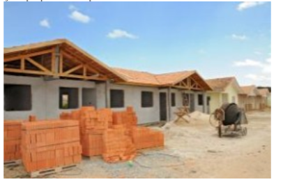
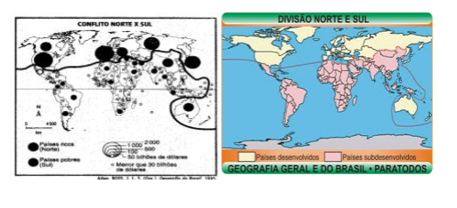

Capítulo 1: Espaço geográfico e sua transformação ao longo do tempo
Questão:Como você percebe o espaço ao seu redor? O que é espaço geográfico? Como foi alterado ao longo do tempo?
Contextualizando – A indústria Metalúrgica no Rio Grande do SulAo longo deste capítulo, vamos estudar o espaço geográfico e suas transformações ao longo do tempo para que possamos entender como o espaço que vivenciamos é transformado pela ação humana e influencia, por sua vez, as ações dos sujeitos que com ele interagem.
Espaço geográfico: objeto de estudo da geografia
Mas afinal, o que é objeto de estudo?É formado por um conjunto indissociável, solidário e também contraditório, de sistemas de objetos e sistemas de ações, não considerados isoladamente, mas como um quadro único na qual a história se dá. No começo era a natureza selvagem, formada por objetos naturais, que ao longo da história vão sendo substituídos por objetos fabricados, objetos técnicos, mecanizados e, depois cibernéticos fazendo com que a natureza artificial tenda a funcionar como uma máquina.
Podemos simplificar um pouco essa definição? Vamos então, colocar de outra forma: espaço geográfico é o conjunto formado pelos elementos naturais, os elementos culturais e os elementos invisíveis. Os elementos naturais são aqueles que ocorrem naturalmente sem a interferência humana. Podemos citar como exemplo as florestas, o mar, os rios, o solo. Observe a imagem a seguir. Todos os elementos retratados não foram alterados, como a mata, o rio, o relevo, o solo.
Outro componente do espaço geográfico são os elementos culturais. Esses elementos são entendidos como aqueles criados pela ação, pelas relações, pelas necessidades dos seres humanos. A cidade é um bom exemplo. Nela podemos observar a ação humana materializada nas construções. Na cidade também observamos a manifestação das relações sociais nos diferentes espaços criados para atender as necessidades da população.
Você pode estar se perguntando: e os elementos invisíveis? São os elementos que utilizamos os outros sentidos, que não a visão, para percebê-los. Por exemplo, os sons como as sirenes, os motores dos carros, o sino da igreja, os cheiros.
Observe a próxima imagem e responda à pergunta: Quais elementos invisíveis essa imagem nos remete?
Mas esses espaços sempre foram assim?
Com o passar do tempo muitos espaços vão se modificando. Observe as imagens a seguir:
Ao analisar as imagens percebemos que na primeira ocorreu um evento natural que provocou muitos estragos e prejuízos. Você já ouviu falar da enchente de 1941 que inundou o centro de Porto Alegre? A partir desse evento o poder público optou por efetivar um conjunto de medidas, entre elas, construir um muro para evitar que outra enchente pudesse invadir a cidade e dessa forma alterou significativamente o espaço da capital gaúcha.
Você percebeu que um evento natural provocou alterações no espaço e na forma como a população se relaciona com esse espaço? Você conhece outras histórias que ocorreram no município onde você mora e que provocaram alterações no espaço geográfico? Registre e compartilhe com a turma.
